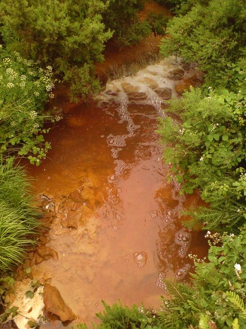

What is water pollution?
Water pollution is the contamination of water bodies (e.g. lakes, rivers, oceans, aquifers and groundwater), very often by human activities.
Water pollution occurs when pollutants (particles, chemicals or substances that make water contaminated) are discharged directly or indirectly into water bodies without enough treatment to get rid of harmful compounds. Pollutants get into water mainly by human causes or factors. Water pollution can be a or in nature. Water pollution is the second most imperative pollution.
Any change or modification in the physical, chemical and biological properties of water that will have a detrimental consequence on living things is water pollution.

The water pollution problem Water covers over 70% of the Earth’s surface. It is a very important resource for people and the environment.
Water pollution affects drinking water, rivers, lakes and oceans all over the world. In many developing countries, it is usually a leading cause of death, by people drinking from polluted water sources.
More to this, water pollution affects not only individual living species, but also populations and entire functioning ecosystems that exists in the waters.
Humans have now realised the importance of clean water as a foundation for life. In recent time, more and more organisations and councils are working hard to educate, protect, restore waterways and encourage practices that help keep waters from contamination, and also to preserve water ecosystems from destruction.